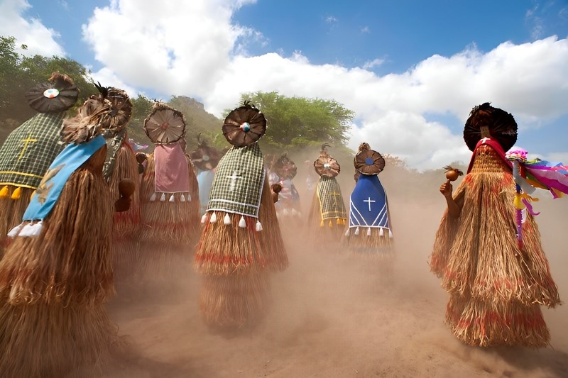

Toré
Um dos rituais mais significativos para os Pankararu é o "Toré". Este é um evento espiritual e cultural que ocorre em ocasiões especiais, como festividades tradicionais, celebrações sazonais ou marcos importantes na vida da comunidade. O Toré é uma expressão artística que incorpora dança, música, canto e simbolismo, e desempenha um papel central na espiritualidade Pankararu.
O início do Toré é marcado pela preparação do espaço sagrado, geralmente um terreiro cuidadosamente escolhido, onde os participantes se reúnem em círculo. Os dançarinos, vestidos com trajes coloridos e ornamentos tradicionais, iniciam os movimentos rituais acompanhados pelos sons de instrumentos musicais como maracás e flautas.